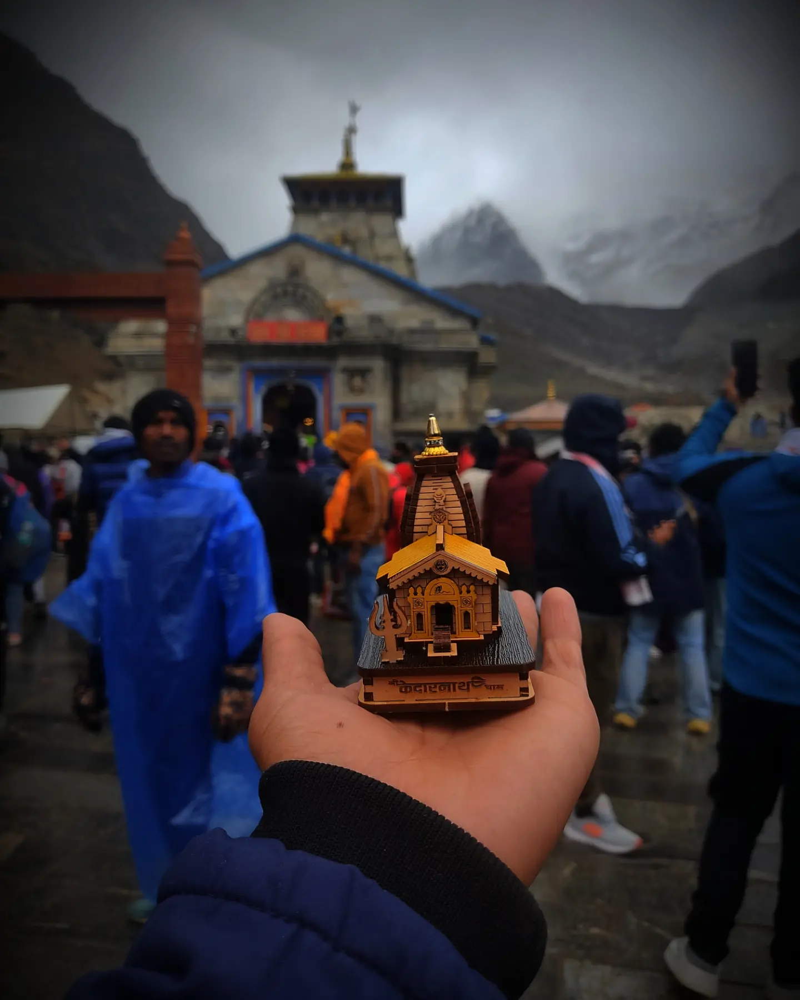
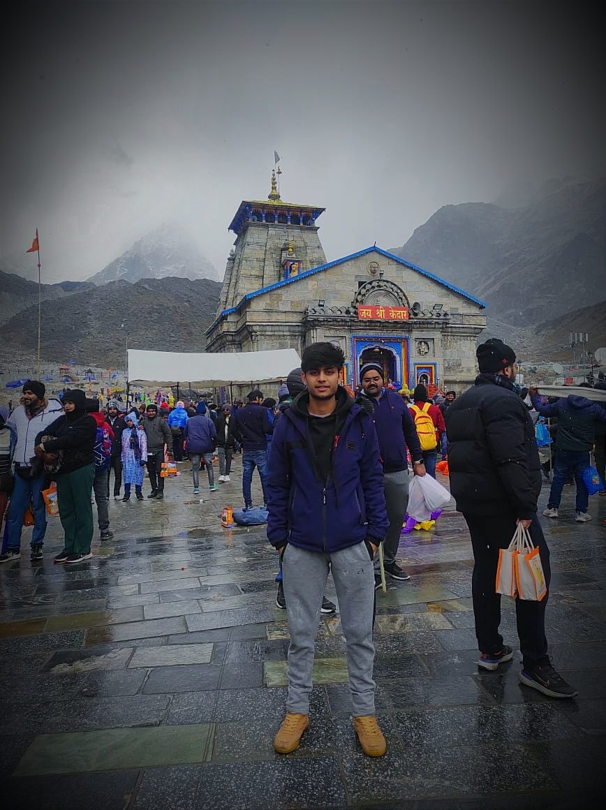

Kedarnath is the most remote of the four Chota Char Dham pilgrimage sites. It is located in the Himalayas, about 3,583 m (11,755 ft) above sea level near the Chorabari Glacier, which is the source of the Mandakini river. The town is flanked by snow-capped peaks, most prominently the Kedarnath Mountain.
 